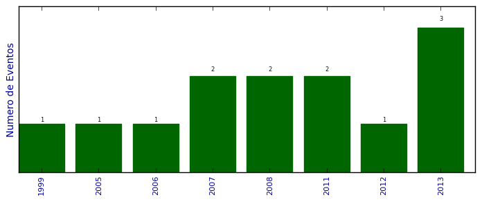

Total de participação em eventos

Número total de itens: 13
2013
| 1. | 11. Escola Regional de Redes de Computadores.Avaliação de artigos. 2013. (Outra). |
| 2. | Congresso da Sociedade Brasileira de Computação. Organizador de evento. 2013. (Congresso). |
| 3. | V SBCUP.Coordenador Geral. 2013. (Simpósio). |
2012
| 1. | IV SBCUP.Coordenador de Sessão, Coordenador Comitê de Programa.. 2012. (Simpósio). |
2011
| 1. | Congresso Sociedade Brasileira de Computação (CSBC). 2011. (Congresso). |
| 2. | III Simpósio Brasileiro de Computação Ubíqua e Pervasiva. 2011. (Simpósio). |
2008
| 1. | II Workshop on Pervasive and Ubiquitous Computing.Introduzindo a orientaçao a Tarefas Clínicas em um Middleware de Gerenciamento do Es. 2008. (Simpósio). |
| 2. | SBAC-PAD 2008. 2008. (Congresso). |
2007
| 1. | I Workshop on Pervasive and Ubiquitous Computing.Uma abordagem baseada em Ontologias para Sensibilidade ao Contexto na Computação. 2007. (Simpósio). |
| 2. | SBAC-PAD 2007. 2007. (Simpósio). |
2006
| 1. | X Simpósio Brasileiro de Linguagens de Programação.X Simpósio Brasileiro de Linguagens de Programação. 2006. (Simpósio). |
2005
| 1. | Simpósio Brasileiro de Redes de Computadores e Sistemas Distribuídos.Simpósio Brasileiro de Redes de Computadores. 2005. (Simpósio). |
1999
| 1. | SBLP - SImpósio Brasileiro de Linguagens de Programação. 1999. (Simpósio). |
(*) Relatório criado com produções desde 1999 até HOJE
Data de processamento: 02/04/2014 18:12:47